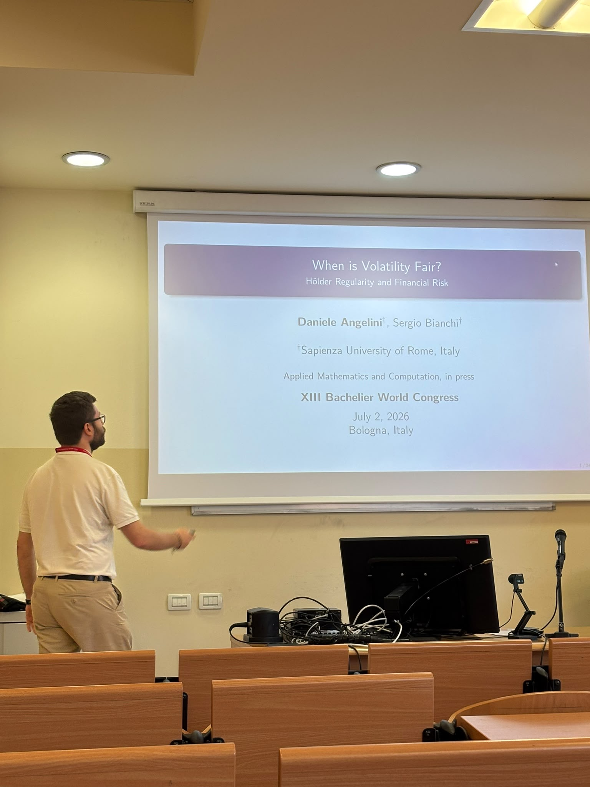
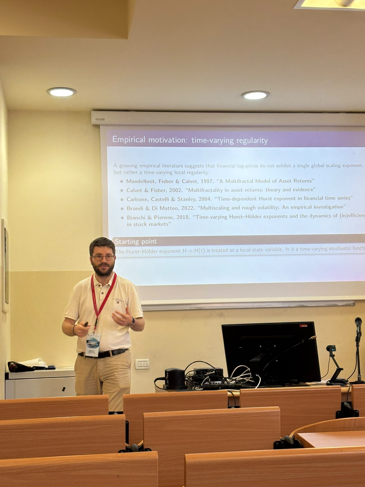
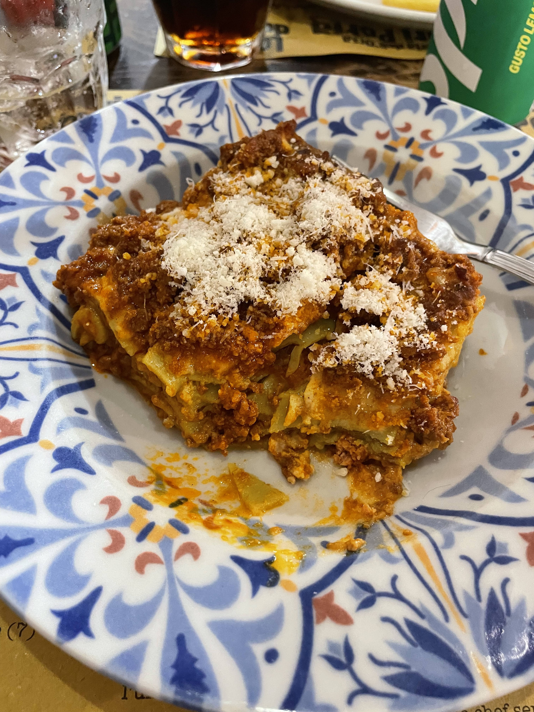

The Bachelier World Congress in Bologna was one of those occasions in which a research field becomes visible as a living community. For a few days, familiar words — stochastic processes, volatility, pricing, risk, market dynamics — stopped being only objects on paper and became conversations between people coming from different mathematical traditions.
What I appreciated most was not only the scientific programme, but the rhythm of the conference itself: moving from one talk to another, meeting researchers whose work I had previously known only through papers, and discovering how different approaches can illuminate the same problem from unexpected directions.
For my own work, the conference was also a useful moment of orientation. Questions about roughness, persistence, scaling and volatility are never isolated questions. They sit at the boundary between probability, statistics and modelling, and they become more interesting when discussed with people who approach them from different angles.
Conferences are not only places where results are presented. They are places where one understands how a research problem sounds when it is placed in front of a community.
Bologna as a setting
Bologna gave the congress a very particular atmosphere. The city has a dense academic identity, but also a human scale: walking through porticoes, crossing the university area, and returning from a session to the streets of the historical centre made the week feel less like a closed event and more like a meeting between research and place.
I often find that conferences are remembered through a few precise images: a discussion after a talk, a sentence written quickly in a notebook, a room full of people listening to the same problem, or the short walk between two sessions. Bologna added its own images to this memory.


What remains after the conference
After a conference, the useful part is not only the list of talks attended. It is the set of questions that remain open when one returns home. Some are technical; others are broader: how to explain an idea more clearly, which assumptions really matter, which empirical problems deserve more attention, and where a line of research might naturally go next.
In this sense, Bologna was not just a destination. It was a checkpoint: a moment to measure the distance between current work and future questions, and to remember that research is built both in solitude and in conversation.
